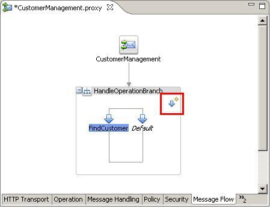
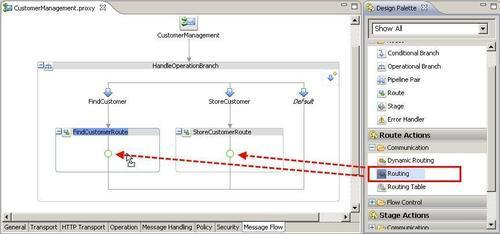
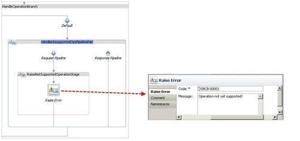
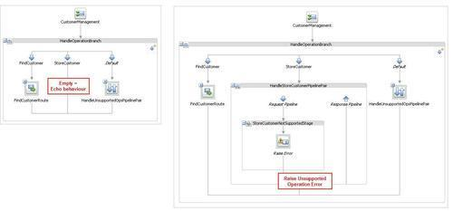
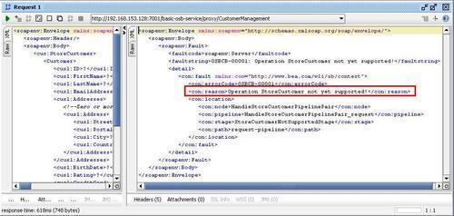

To support the different operations of the WSDL we need different branches, which will hold the necessary flow logic. This can be achieved with an Operational Branch node.
Make sure you have the current state of the basic-osb-service project available in Eclipse OEPE. We will start this recipe from there. Delete the existing routing node by right-clicking on it and then select Delete. We again have an empty message flow to start with. If needed, it can be imported from here: \chapter-1\getting-ready\echo-proxy-service-created.


business folder).The operational branch allows for implementing each operation of a multi-operational WSDL in a different way. In the Message Flow that we have implemented so far, the difference was just the routing to another operation on the external service. If the WSDL only contains one operation, then an operational branch is not really necessary. But we suggest to always use it from the beginning, in order to be prepared if an additional operation is added later. This also provides an option to handle invalid invocations or unsupported operations in the default branch.
With that in place, the service will now correctly route the calls on the different operations. What is not yet done is the adaption between the data models of the two services. This will be covered in the next recipe.
In this section, we will discuss the default branch of an Operational Branch node and show how to handle an operation which is not (yet) supported.
Each single operation does not need to have its own branch. If an operation has no branch, then a call on that operation will end up in the default branch and all calls to an operation without a dedicated branch have to be handled there. If the default handler is left empty, then the behaviour will be an echo, similar to the empty proxy service that we have seen a few recipes back. So every message sent on an operation without a branch will be sent back untouched and unchanged.
The default branch can be used to either generically handle all other messages not handled by a specific branch or to return an error, that this operation is not (yet) supported (see next section).
Use the default branch to raise an error by performing the following steps:

An operation branch should not be left empty just because it will only be implemented later and is not supported with the current release. If a branch is empty, then it will have the 'echo' behavior, resulting in a message sent to such an operation being returned just as is. It might be very difficult for a potential caller of such an operation to find out what happened. It's better to remove the branch completely and let the Default branch handle it or to add a Raise Error to the operational branch to signal an error:

When using a branch specific for each operation, the name of the operation can be specified in the error message. If somebody is using the not yet supported StoreCustomer operation, the following SOAP fault will be returned:
